Double integrals
| > | restart; with(plots): with(VectorCalculus): |
Warning, the name changecoords has been redefined
Warning, the assigned names <,> and <|> now have a global binding
Warning, these protected names have been redefined and unprotected: *, +, ., D, Vector, diff, int, limit, series
One way of representing a double integral is literally as two nested single integrals. For example, over a rectangle:
| > | I1:= int( 4*x-y^2, y=0..2 ); |
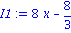
| > | I2:= int( I1, x=0..3 ); |

If you use Int (capitalized), Maple will not evaluate the integral (the "inert" form). This way you can see what is going on.
| > | I1:= Int( 4*x-y^2, y=0..2 ); |
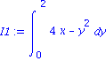
| > | I2:= Int( I1, x=0..3 ); |
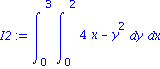
Use value to force Maple to do the evaluation.
| > | value(I2); |
To save time for all this, however, the VectorCalculus package defines a special syntax for int.
| > | int( 4*x-y^2, [x,y]=Region(0..3,0..2) ); |
You can also ask for the "inert" form here.
| > | int( 4*x-y^2, [x,y]=Region(0..3,0..2), 'inert' ); |

The integrals can be taken with variables in either order. Notice that the "outer" integral is listed first.
| > | int( 4*x-y^2, [y,x]=Region(0..2,0..3), 'inert' ); |
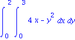
Maple can also do integrals over nonrectangular regions. Some are predefined for you.
| > | int( x*y, [x,y]=Triangle(<0,0>,<2,0>,<2,1>) ); |
| > | int( 1, [x,y]=Circle(<0,0>,4) ); |
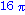
More generally you need to work out variable limits on the "inner" integral. For example, to integrate over this region:
| > | implicitplot( {x=exp(y),x=2}, x=0..2, y=0..ln(2) ); |
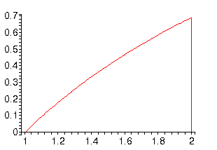
We see that x varies from the value exp(y) to 2, as y varies from 0 to ln(2). Hence we can use
| > | int( f(x,y), [y,x]=Region(0..ln(2),exp(y)..2) ); |
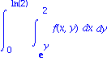
An alternative is to do y first.
| > | int( f(x,y), [x,y]=Region(1..2,0..ln(x)) ); |
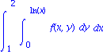
They have to give the same answer!
| > | eval(%,f(x,y)=x*y^2), eval(%%,f(x,y)=x*y^2); |
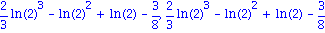
Polar coordinates
From Maple's point of view, there is nothing special about polar integrals. You must remember to put the extra factor of r in the integrand, and you have to change the limits of integration manually.
For example. consider integrating x^2+y^2 over a quarter-ring domain:
| > | p1:=implicitplot( {x^2+y^2=1,x^2+y^2=4}, x=0..2, y=0..2):
p2:=plot([ [0,t,t=1..2],[t,0,t=1..2]],color=red): display({p1,p2},scaling=constrained,axes=frame); |
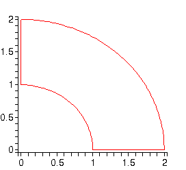
The most natural form of this is in polar coordinates. Note that we have to insert the extra factor of r.
| > | int( r^2*r, [r,theta]=Region(1..2,0..Pi/2), inert ); |
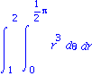
| > | value(%); |
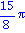
We could get the same result more awkwardly in rectangular coordinates by breaking into two pieces.
| > | int( x^2+y^2, [x,y]=Region(0..1,sqrt(1-x^2)..sqrt(4-x^2))) +
int( x^2+y^2, [x,y]=Region(1..2,0..sqrt(4-x^2))); |
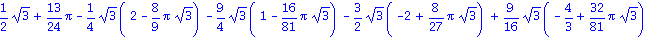
| > | simplify(%); |
| > |